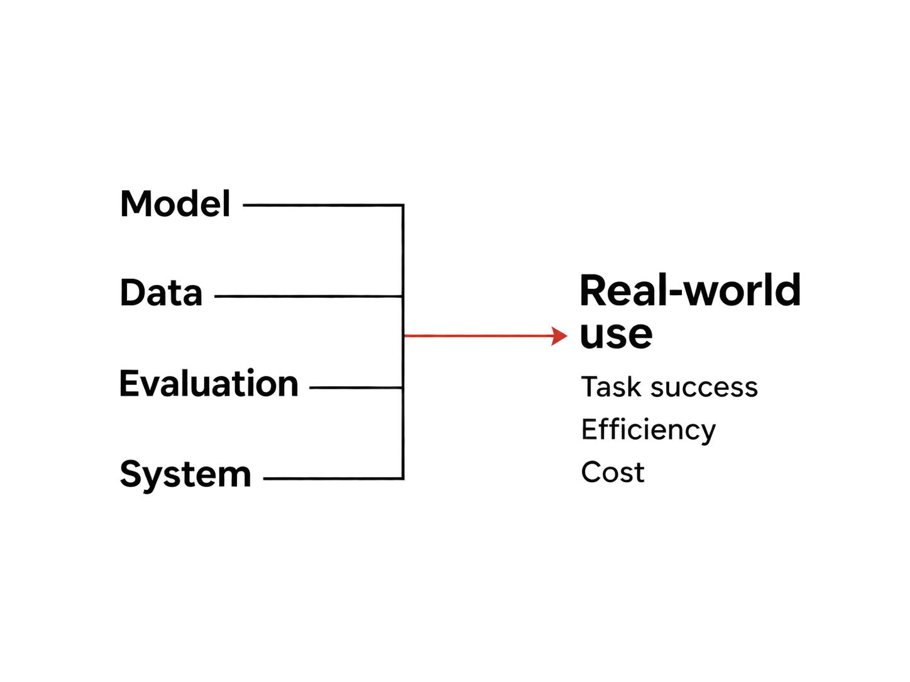

引言
参与 RoboDojo 对 GPT-6 Astra 的评测之后，我开始重新思考具身原生团队的研发投入。语言理解、推理和代码能力开始进入机器人任务，过去需要专门攻克的问题，正在被通用基模覆盖。
当离身智能与具身智能的次元壁被打破，具身原生团队该何去何从？
我关心的，是通用基模带来的生态位挤压：当一项能力可以从通用基模直接获得，围绕它单独训练模型的投入，就需要重新证明价值。具身原生团队需要回答，哪些问题仍值得自己解决，以及能否比不断进步的通用方案做得更好。
在我看来，未来的核心竞争力取决于两层对齐：团队如何定义自身优势，并让这些优势与场景匹配；技术布局又与场景需求对齐得有多好。前者决定团队在哪些场景中最有价值，后者决定研发投入能否转化为场景中的持续优势。我把这种研发重心的变化称为「大定义时代」。
这条逻辑从定义开始：明确要解决的问题与自身优势，再让技术布局与场景对齐，在能力满足需求的前提下，用时间效率与经济效率证明方案的价值，建立自己的生态位。
通用基模正在挤压具身原生模型的生态位
2026 年 9 月发布的 RoboDojo 评测报告中，Astra 无需任务专用微调，在 42 个仿真任务、2,100 次试验中取得 22.48% 的平均成功率，领先当时比较的 40 个公开策略。它将通用预训练中积累的语言、视觉、推理与代码能力，带进了机器人任务。[1]
过去，指令理解、上下文学习与纠错，可以分别构成具身团队的研究方向。如今，这些能力开始随通用预训练一同进入机器人系统，原先需要独立研发的能力，逐渐成为可以直接复用的基础。Mini3DV 中讨论的仿真触觉操作和真机示范学习，也展示了这类迁移的可能性，具体效果则取决于任务与执行方式。[2][3]
汇报中的 Franka 真机倒水实验，同时呈现了能力进步与使用条件的约束。机械臂第一次把水倒在杯外，调整后第二次倒进了杯中。但遇到水流中断时，它的反应又慢了一拍。模型能够发现问题并修正动作，实际使用还要求它在合适的时间完成修正。[1]

我认为，生态位挤压正发生在这里：通用基模持续扩大能力覆盖，原生团队曾经依赖的能力差异就可能被缩小。这把竞争的起点推回了定义：哪些场景仍有值得解决的问题，团队的积累能带来什么优势，以及这种优势能持续多久。
定义：先找准团队优势与场景的交集
定义先于技术选型。团队需要说清楚：谁有这个需求，任务的关键约束是什么，自己的积累能解决其中哪一部分，以及改进到什么程度才值得使用机器人。这些判断会形成两层对齐，也是我认为未来核心竞争力所在。
第一层，是团队优势的定义与场景对齐。团队要明确，自己在物理交互、数据积累或场景理解上的优势，具体能解决哪些关键约束。场景的选择需要同时考虑需求是否成立，以及团队能否凭借自身积累持续做得更好。优势定义得越具体，越容易找到适合自己的场景。
第二层，是技术布局与场景对齐。明确场景之后，再决定哪些能力借助通用基模、哪些值得自研，以及研究、数据、评测与系统各自投入多少资源。模型目标、数据采集和评测指标都需要指向同一组需求，让每一项投入服务于场景中的能力、效率与成本要求。
以多品种拣选为例，擅长快速适配的团队，可以优先选择新品种频繁出现的场景，把泛化能力、数据效率和适配成本作为研发重点；擅长触觉与接触控制的团队，则可以聚焦易滑、易变形物体的稳定抓取，围绕成功率、操作节拍和物品损耗组织技术投入。团队优势、场景选择与技术布局越一致，越有机会形成竞争力。


定义决定往哪里投入，对齐决定如何组织投入。下一步，就是把这种判断落实为场景所需的通用性、效率与技术分工。
对齐：由场景决定通用性与效率的取舍
定义清楚场景之后，对齐就有了具体依据：这个任务需要适应多大变化，能接受怎样的速度与成本。通用模型的单次推理可能更贵，却可能减少新任务的数据采集与适配；专门模型在熟悉的任务上可能更快，但频繁重训也会增加成本。通用性与效率往往存在取舍，场景定义决定了这项取舍的标准。
同样是拿一个杯子，家庭机器人可能要理解不同人的指令，明天还要处理全新的物品。固定工位的物品与流程则相对稳定，操作速度和运行成本更重要。多品种拣选介于两者之间，既需要适应变化，也需要控制每次操作的时间和成本。
我把这种关系画成两条轴。左侧是场景需求，右侧是模型能力。越往上越偏重通用性，越往下越偏重效率。选型时，要把场景真正需要的能力与方案能够提供的能力连起来。

开放任务可以更多借助通用模型，稳定任务可以采用规则或轻量策略，中间的场景则给场景优化模型留下了空间。通用基模的能力与效率继续提升时，这些匹配也会变化，留给专门模型的空间需要重新判断。生态位需要靠对需求的准确判断，以及满足需求时的持续效率优势来建立。
效率：让技术投入变成场景价值
定义给出了值得投入的问题，对齐给出了技术路径，接下来要用效率检验这条路径是否成立。在达到场景所需能力与可靠性的前提下，团队需要证明，自己的方案能以更少的时间或更低的总成本完成任务。这才使技术优势成为可以持续使用的场景价值。
在能力满足任务要求的前提下，我更看重两类效率。时间效率包括完成任务的速度，以及环境变化后的反应速度。经济效率是成功完成任务所需的总成本，包括数据、训练、推理、硬件，以及失败重试和人工介入。它们共同影响一种能力能否在场景中持续使用。
前面的技术选型，需要在这些效率指标上接受检验。通用模型可以负责理解与规划，再调用可复用的技能；具身模型也可以从感知直接生成动作。两条路线可以结合，例如让通用模型处理任务变化，让专门策略负责高频执行。

倒水时的迟缓就需要放在这种分工里分析。底层控制器能够高频执行动作，而应对新变化还取决于上层决策多久到达。因此，需要比较整项任务的耗时和反应速度。当前 API 延迟会影响选型，模型与部署方式变化后，也需要重新比较。
成本同样要沿着完整任务计算。一次推理便宜，但经常抓取失败、需要人来接管，最终的使用成本仍可能很高。

场景反馈需要落到研发取舍上。一个把「快速适配」作为优势的团队，应在同一场景、相同成功率要求下，比较自研方案与可直接复用的通用方案：新增一个品种，分别需要多少数据、调试时间和总成本。这些收益还要覆盖持续自研的投入，才能支撑长期竞争力。如果通用方案已经追平，相应的研发资源就需要重新分配。
Jev：效率如何形成生态位
通用模型领域的 Jev 提供了一个参照。TypeSafe AI 将它定位为服务软件自动化的决策模型，直接返回带类型约束的决策结果，并把低延迟、低成本作为核心卖点。[5]
在通用模型能力已经很强的今天，Jev 仍然有自己的生态位：当一个场景需要的是高频、明确的判断，能力达到要求之后，更快的响应和更低的使用成本就能构成选择它的理由。通用模型「能做」，不等于在每个场景中都最划算。时间效率与经济效率本身，就是竞争力。
对具身团队也是如此。即使通用基模已经能完成某类操作，专门方案仍可能凭借更快的反应、更短的操作周期、更低的适配与运行成本，在具体场景中保有价值。定义要找准哪些需求最看重这些优势，对齐要让技术布局服务于这些需求，效率则要证明用户为什么持续选择自己的方案。这就是团队优势与场景、技术布局与场景两层对齐最终形成生态位的过程。
心态上做降临派，行动上做拯救派
从定义、对齐到效率，再到生态位，这条逻辑也解释了我在 Mini3DV 结尾的立场。那里借用了三个派别，概括对 LLM 与具身智能关系的不同预期。
降临派相信，大模型最终能够解决一切问题，具身智能也包含在内，而 Scaling 是通向这一目标的主要路径。
拯救派主张借助 LLM 做语义理解、任务规划和失败归因，把底层接触控制交给专门策略，通过两类能力的分工寻找具身智能的生态位。
幸存派强调从物理交互中学习，通过自己的世界模型建立对重力、摩擦等规律的理解，对 LLM 能带来多少物理能力保持怀疑。

心态上做降临派，是认真对待「大模型最终解决一切问题」的可能性，把通用能力持续进步纳入技术判断。行动上做拯救派，是从今天的场景需求出发，把值得投入的物理交互与效率问题做深。
未来具身团队的核心竞争力，在于把自身优势定义清楚、与合适的场景对齐，让技术布局持续对齐这些场景，并用时间效率与经济效率建立优势。通用基模会持续改变竞争边界，而团队能否保有生态位，取决于这两层对齐能否持续转化为场景中的效率优势。这就是我所说的「大定义时代」。
参考资料
文中的趋势与产业判断为个人观点；实验结果以对应论文的任务、协议与时间范围为准。
- An Unexpected Robot Policy: Early Evaluations of GPT-6 Astra on RoboDojo and Beyond2026.09 · 仿真评测、能力分析与局限
- GPT-6 Astra Is a Native Visuo-Tactile Policy for Contact-Rich Manipulation2026.10 · 视觉触觉研究，仿真结果仍需真机验证
- In-Context Robot Learning with VLM AgentsGPT-Policy · 不同上下文与执行接口下的实验
- RoboDojo: A Unified Sim-and-Real Benchmark for Comprehensive Evaluation of Generalist Robot Manipulation Policies2026.07 · 评测任务与协议
- TypeSafe AI · Jev官方模型介绍 · 面向软件自动化的决策模型，强调延迟与成本；文中对具身团队生态位的讨论为个人类比